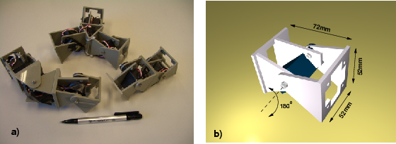

Next: 2 Construction of the Up: multicube-clawar Previous: multicube-clawar


Next: 2
Construction of the Up: multicube-clawar
Previous: multicube-clawar
|
 |
Figure: a) The three modular configurations constructed, composed of two and three Y1 modules: Pitch-Pitch (PP), Pitch-Yaw-Pitch (PYP) and three-modules star. b) A cad rendering of the Y1 modules
Modular robots are composed of simple modules[1]. Different robot configurations, like snakes or spiders, can be constructed by linking modules. Some robots are self-reconfigurable and capable of changing its shape, like Polybot[2]. The number of robot following this approach has increased substantially [3][4][5]. The main advantages are versatility, robustness and low cost. Applications outside the research world has not been seen yet, but they are planned to be used in space applications[7] and urban search and rescue[6].
The amount of different configurations growth exponentially with the number of modules and there is no geometrical limitation to the total number of modules. In this paper we focuses on the minimum number of modules needed to achieve locomotion and to perform motions like lateral rolling[8] and lateral shift. Also, the study of motion of these minimal configurations is developed for a better understanding of the locomotion's properties of more complex configurations.
Three modular robots using one-degree-of-freedom modules are
presented (Figure a).
The simplest one has only two modules and it is capable of moving
forward and backward. Adding just one more module, three new types of
locomotion appears: 2D sinusoidal locomotion, lateral rolling and
lateral shift.
a).
The simplest one has only two modules and it is capable of moving
forward and backward. Adding just one more module, three new types of
locomotion appears: 2D sinusoidal locomotion, lateral rolling and
lateral shift.


Next: 2
Construction of the Up: multicube-clawar
Previous: multicube-clawar